Shape Optimization
of Gripper Arm
A generative approach to reducing mass in end-effectors without compromising structural integrity. Using FEA-driven shape optimization in Autodesk Fusion 360 to identify and eliminate non-critical stress zones, targeting a 60% weight reduction while maintaining a safety factor ≥ 2.0.
40%
Target Mass
500N
Applied Load
≥ 2.0
Safety Factor
FEA
Fusion 360
Process_Overview
Shape optimization is the process of removing unwanted material from a component by performing stress analysis. It is part of the field of optimal control theory. By analyzing the load paths within a structure, material can be selectively removed from zones where stress is minimal — resulting in lighter, more efficient components without sacrificing strength.
This study was conducted in Autodesk Fusion 360's Simulation workspace, utilizing its built-in shape optimization and static stress analysis solvers.
Phase_01 — CAD Model
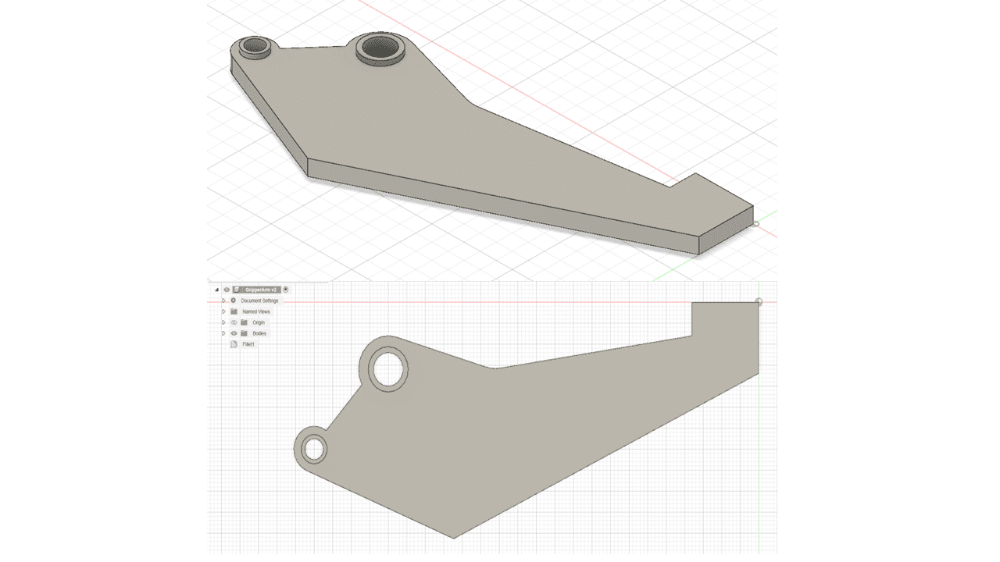
Original Gripper Arm Geometry
The initial model was created in the Design Tab of Fusion 360. The gripper arm features two bolt holes for mounting (varying diameters), and a flat gripping surface at the distal end. This is the baseline geometry before any material has been removed.
Phase_02 — Simulation Setup
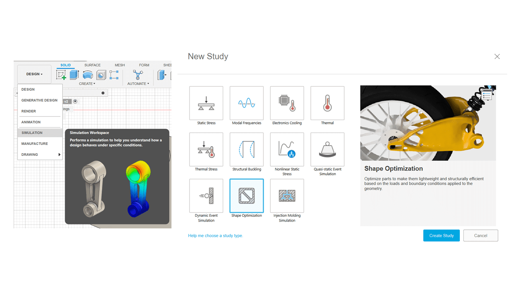
Create Shape Optimization Study
Switched to the Shape Optimization tab, clicked New Studies, and selected the Shape Optimization option to begin the analysis workflow.
Simulation → Setup → New Study → Shape Optimization
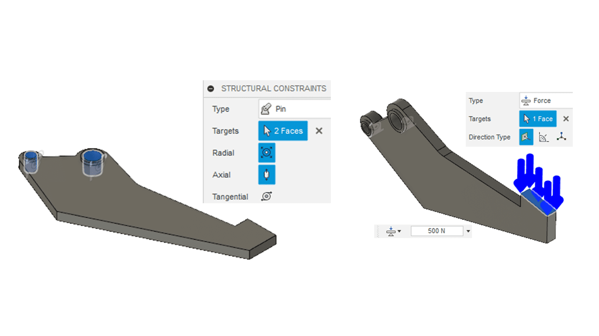
Define Structural Constraints
Applied Pin constraints to the inside surfaces of both bolt holes — constraining motion in both radial and axial directions to simulate the real-world mounting condition.
Setup → Constraints → Structural Constraints → Pin
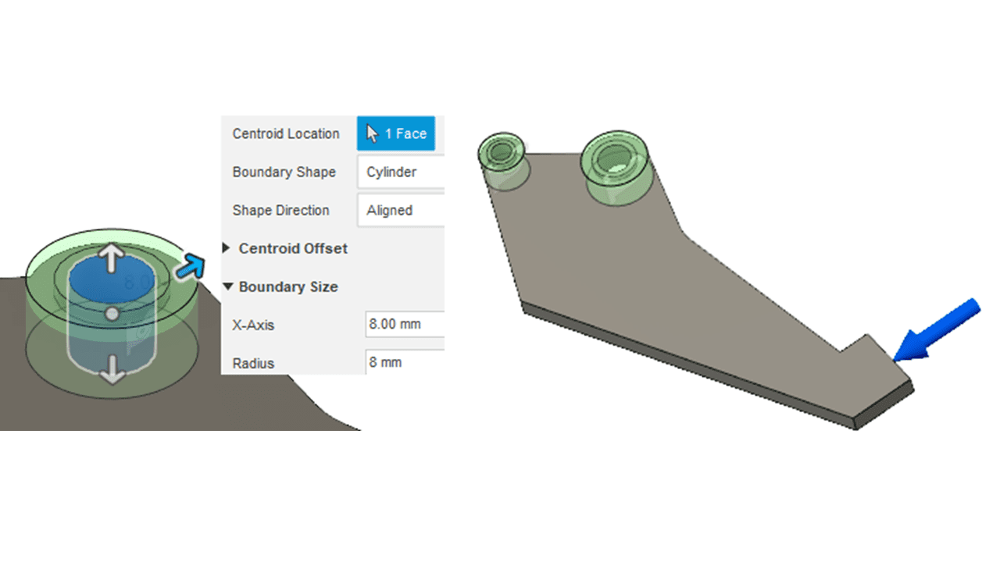
Apply Structural Loads
Applied a 500 N force in the normal direction of the gripping surface. This simulates the maximum clamping force the gripper arm must withstand during operation.
Setup → Loads → Structural Loads → 500N Normal
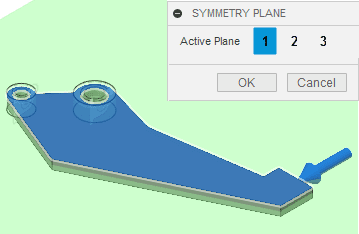
Define Preserve Regions
To ensure proper material strength around fastener holes, preserved an 8 mm distance around the large hole and a 5.5 mm distance around the small one. This prevents the optimizer from removing critical material near high-stress attachment points.
Setup → Shape Optimization → Preserve Region
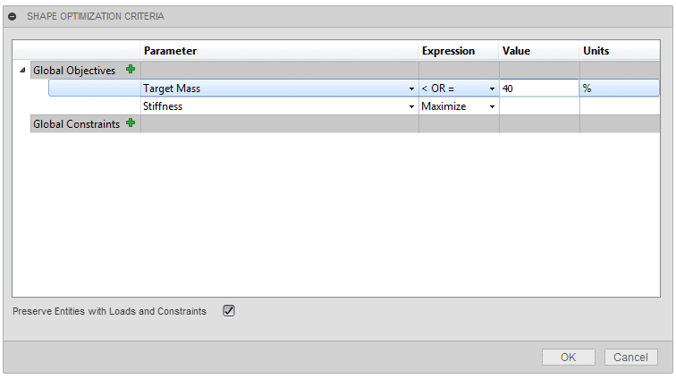
Create Symmetry Plane
A symmetry plane was created through the thickness of the arm. This ensures the optimization produces a symmetrical result — critical for balanced load distribution and manufacturability.
Setup → Shape Optimization → Symmetry Plane
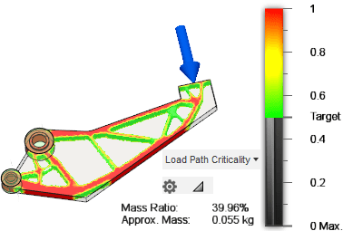
Set Optimization Criteria & Solve
The shape optimization target mass was set to 40% of the original. Mesh size was refined for accuracy. The solver then computed the optimal material distribution based on load paths, constraints, and the target mass reduction.
Setup → Shape Optimization Criteria → Target: 40% → Solve
Phase_03 — Results & Reconstruction
A Load Path Criticality Results
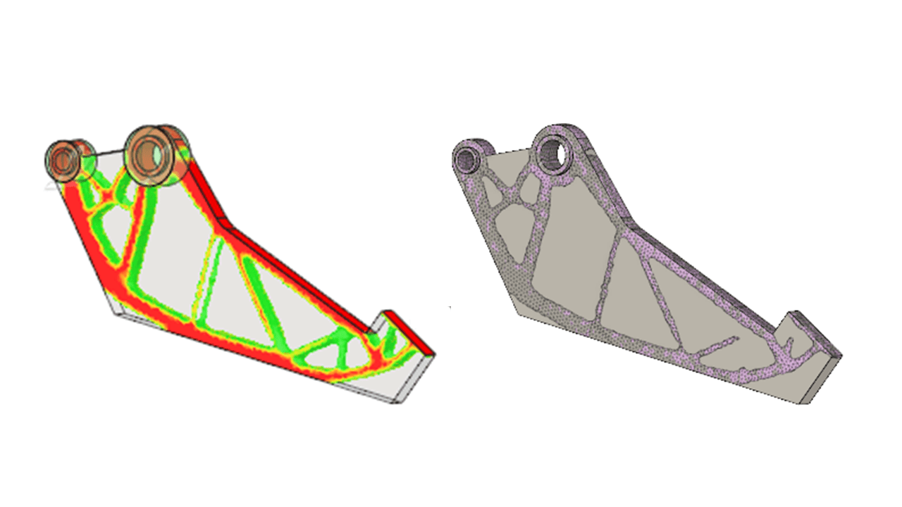
Red Zones
High-criticality load paths — material must be preserved for structural integrity.
Green Zones
Low-criticality regions — material can be safely removed with minimal impact.
Mesh Overlay
Optimized mesh topology showing the organic truss-like structure generated by the solver.
B Mesh Export & Spline Tracing
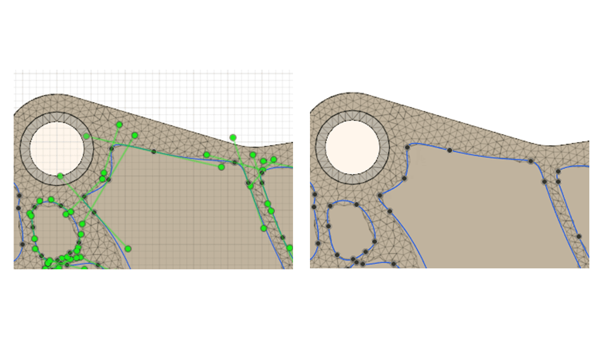
The optimized mesh was exported back to the Design workspace. Using the load path criticality results as a guide, splines and lines were carefully drawn on areas with lower stress to define the final material removal boundaries.
This step bridges the gap between the purely mathematical optimization output and a manufacturable solid model that can be produced via CNC machining or 3D printing.
C Extrude Cut — Final Geometry
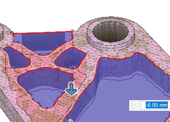
The design was finalized by performing an extrude cut through the traced profiles, producing the lightweight version of the gripper arm. The cut paths follow the organic topology generated by the shape optimization solver.
The result is a component with significantly reduced mass while retaining all critical load-bearing paths — achieving the target of ~40% original mass.
Phase_04 — Static Stress Validation
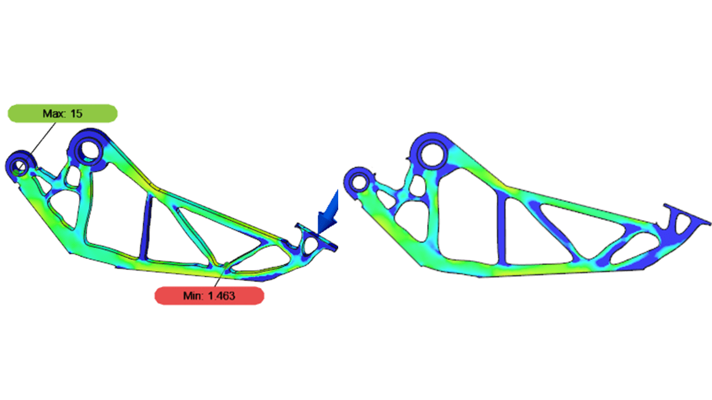
Safety Factor Results
Validation Process
The shape optimization study was cloned and the study type was switched to Static Stress. This allows the optimized geometry to be validated under the same loading conditions to confirm structural adequacy.
Manage → Clone Study → Static Stress → Solve
The Min/Max inspection was used to verify the factor of safety across the entire model.
Results → Inspect → Show Min/Max
Conclusion
The static stress study was performed with the objective of reducing the part's weight to approximately 40% of the original and maximizing stiffness. A stress analysis verified that stress and displacement in the modified part shape are acceptable. The generated shape achieves a safety factor within acceptable engineering margins — indicating that the part can withstand the applied 500N load and is suitable for manufacturing.
Workflow_Summary
Step 1
CAD Model Creation
Step 2
Constraints, Loads & Criteria
Step 3
Optimize & Reconstruct
Step 4
Static Stress Validation